5.1. ImageJ Script 예시
Reference
A Fiji Scripting Tutorial #3. Inspecting properties and pixels of an image
A Fiji Scripting Tutorial #4. Finding the java documentation for any class
5.1.1. ImageJ 의 Image Processing 과정
image processing은
(1) 이미지를 불러와서
(2) 원하는 결과를 얻기 위해 적절한 알고리즘을 적용하고
(3) 처리된 데이터를 저장하는 과정입니다.ImageJ에서는ij모듈을 통해 이를 위한 명령어를 다음과 같이 지원합니다.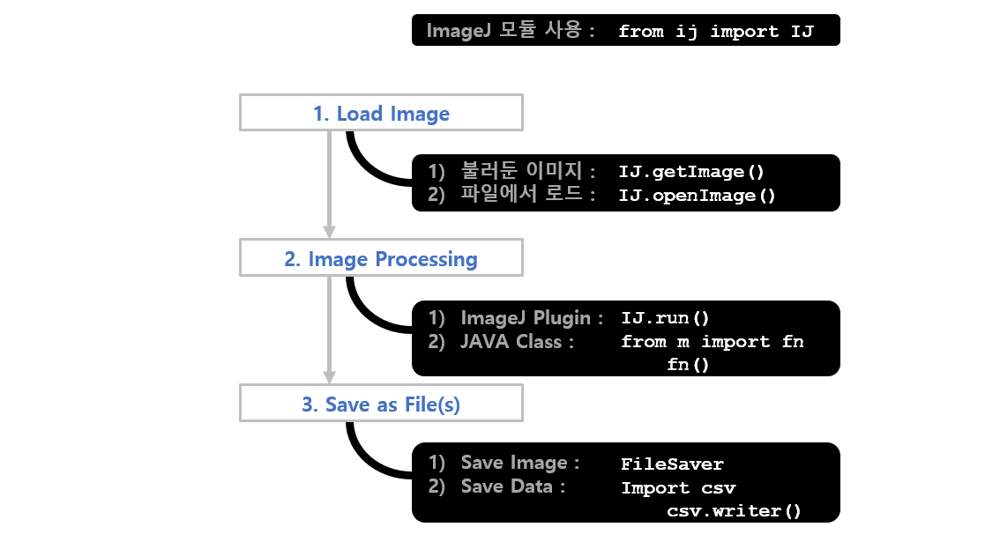
1. Image Load : 처리할 이미지를 불러옵니다.
- GUI를 통해 화면에 띄운 이미지를 활용할 수도 있고, 파일로부터 불러올 수도 있습니다.
2. Image Processing : 불러온 이미지를 편집하는 과정입니다.
ImageJ에 내장된 Plugin을 그대로 사용할 수도 있고, Plugin으로 탑재되지 않거나 더 Low level로 구현된JAVA Class들을 불러와서 사용할 수도 있습니다.두 경우 모두 파라미터를 적절하게 넣어주어야 목적을 달성할 수 있습니다.
3. Save to File(s) : 결과물을 파일로 저장합니다.
- 처리된 이미지를 저장할 수도 있고 (Save Image)
- 이미지에서 추출한 데이터를
csv파일로 저장할 수도 있습니다 (csv.writer())
5.1.2. ImageJ 의 Image Processing 예시
- Image Processing 예시로
median을 적용하는 과정을 간단히 만들어 보았습니다. 상세한 설명은 앞으로의 포스트에서 차차 하겠습니다.
부분별 기능을 코드에 주석으로 달았습니다.1
2
3
4
5
6
7
8
9
10
11
12
13
14
15
16
17
18
19
20
21
22
23
24
25
26
27
28
29
30
31
32
33from ij import IJ
# 1. Load Image
imp = IJ.getImage()
# 2. Image Processing
## 2.1. Image Pixel Data를 추출해서 32-bit float로 변환
ip = imp.getProcessor().convertToFloat()
## 2.2. Median Filter를 radius = 2로 적용
from ij.plugin.filter import RankFilters
radius = 2
RankFilters().rank(ip, radius, RankFilters.MEDIAN)
## 2.3. ImageProcessor를 다시 ImagePlus 형식으로 변환
from ij import ImagePlus
imp2 = ImagePlus(imp.title + "median_filtered", ip)
## 2.4. 이미지를 화면에 표시
imp2.show()
# 3. 파일로 저장
from ij.io import FileSaver
##3.1. 저장 위치(workdir)과 파일명(workfile) 지정
import os
workdir = r'C:\Tmp'
workfile = 'median.JPG'
outpath = os.path.join(workdir, workfile)
## 3.2. jpeg 형식(.JPG)로 저장
fs = FileSaver(imp2)
fs.saveAsJpeg(outpath)- 위 코드를 실행하면 아래와 같은 결과를 얻을 수 있습니다.
- 원본의 선명한 컬러 그림이 코드가 실행된 후 median처리되어 흑백의 뿌연 그림이 되고, 최종적으로 지정된 장소(
C:\Tmp)에median.JPG라고 저장되었습니다.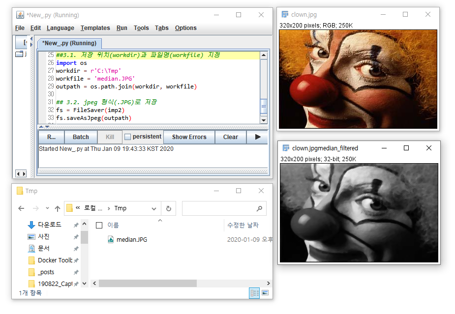
5.1.3. ImageJ Plugin 제작
- 제작한 script를
ImageJPlugin으로 제작할 수 있습니다. ImageJ가 설치된 폴더 (C:\Users\[본인계정]\Fiji.app) 하부에plugins가 있습니다.
여기에 script를 저장하고ImageJ를 재시작하면 됩니다.- 파일명에 underscore (
_)가 있으면ImageJ가 자동으로 Plugin으로 인식합니다. - 폴더를 만들고 그 안에 script 파일을 넣으면
plugins에도 폴더가 할당되어 그 안에 들어갑니다. Pega라는 폴더 안에 튜토리얼 플러그인을 설치한 예시입니다.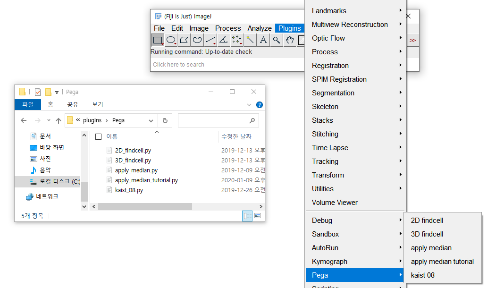
5.2. ImageJ script 작성
ImageJ로 구현하고자 하는 최종 목적을 위해 순차적으로 실행할 기능을 설계합니다.
- 해당 기능이 있는지 찾고
- plugin이라면 파라미터의 종류를,
JAVA Class라면 문법까지 확인한 후 - script 안에 구현합니다.
- 실행하여 결과를 확인하고 원하는 결과를 얻을 때까지 파라미터를 튜닝합니다.
5.2.1. ImageJ 기능 탐색
- 내가 찾는 기능이
ImageJ에 있는지 찾아보려면Command Finder를 사용합니다. Command Finder는ImageJ하단의 검색창을 클릭해서 실행할 수도 있고,
단축키l(L)을 누르면 커서가 자동으로 이 곳으로 이동합니다.- ‘혹시 이런 기능이 있지 않을까’ 하는 명령을 타이핑해봅니다.
- 하단에 관련된 기능이 펼쳐집니다.
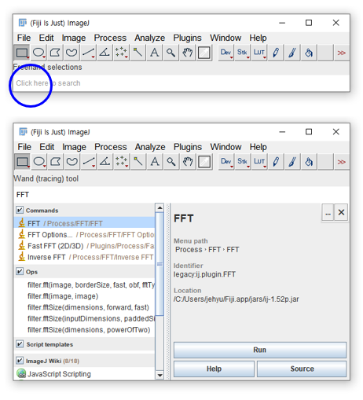
Menu Path는 GUI 메뉴에서FFT가 위치한 곳을 보여줍니다.Process > FFT > FFT를 차례로 클릭하면FFT를 실행할 수 있습니다.identifier는FFT가 포함된 모듈을 의미합니다.legacy:ij.plugin.FFT라고 되어 있으므로from ij.plugin import FFT로 함수를 호출할 수 있습니다.
5.2.2. ImageJ plugin 파라미터 종류 확인
plugin에 포함된 기능은 ‘ij.run()’을 이용해 비교적 쉽게 실행할 수 있습니다.- 파라미터를 찾기 위해서는
Macro Recorder를 사용하는 것이 가장 간편합니다. FFT는 별도의 파라미터가 없이 실행 가능하므로median을 실행해 봅시다.File > Open Samples > Clown을 선택해서 광대 사진을 띄웁니다.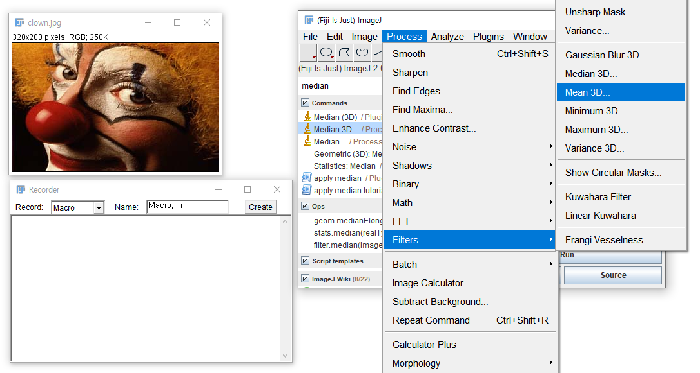
Plugins > Macros > Record...를 선택하여 매크로 녹화 창을 켭니다.median의Menu Path인Process > Filters > median 3D를 실행합니다.x,y,z방향radius입력창이 나옵니다. 각기 이미지의 x, y, stack 방향입니다. 모든 방향에 균일하게 2.0을 입력하고OK버튼을 누르면 이미지에medianfilter가 적용되고Macro Recorder창에 아래와 같은 메시지가 나옵니다.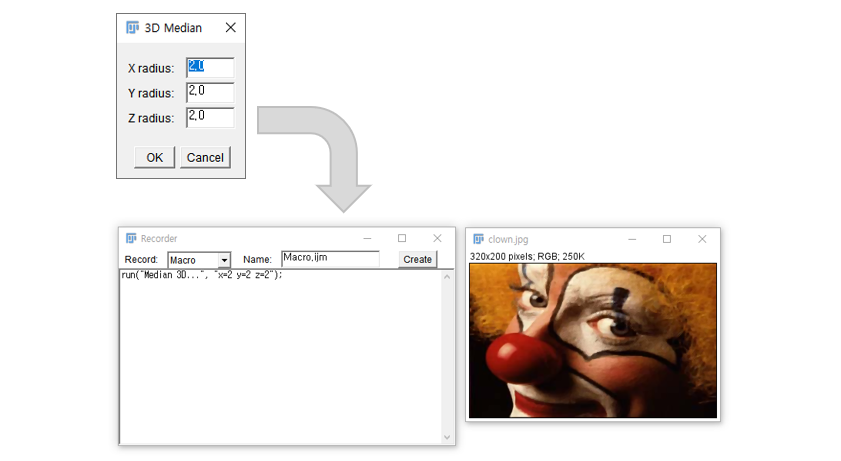
1
run("Median 3D...", "x=2, y=2, z=2")`
GUI 환경에서 수행한 위 명령은 script를 통해 아래와 같이 그대로 적용할 수 있습니다.
IJ.getImage()나IJ.openImage()로 이미지를ImagePlus형식으로 로드한 후,IJ.run()을 통해 다음과 같이 이미지, 명령, 파라미터를 함께 넣고 실행합니다.- 형식은
IJ.run([ImagePlus], "[명령어]", "[파라미터]")입니다.1
2
3
4from ij import IJ
imp = IJ.getImage()
IJ.run(imp, "Median 3D...", "x=2, y=2, z=2")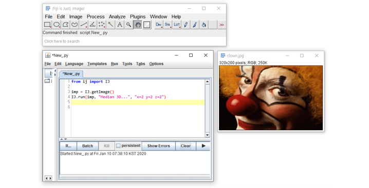
5.2.3. ImageJ JAVA Class 문법, 파라미터 확인
python에서JAVA를 불러 사용하는jython의 특징이 가장 크게 발휘되는 부분입니다.
바꿔 말하면, 가장 험난한 곳입니다.대부분의 경우
plugin에 있는 기능을 활용 가능하니 참고차 알아둔다고 생각하세요.설상가상으로 튜토리얼에서는 script 창의
Tools > Open Help for Class (with frames)를 통해 도움말을 얻으라고 되어 있으나 실제로 작동하지 않습니다.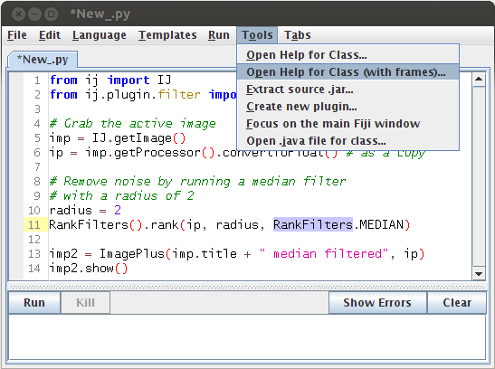
- 이대로 실행하면 아무 창도 안뜹니다.
튜토리얼에서 제시한 도움말은
java documentation을 여는 명령입니다.ImageJ,ImageJ1,Fiji가 각기java documentation을 가지고 있으며 모두ImageJ외부에서 접근 가능합니다.- 하지만 여기서 Tree 구조로 찾는 것보다
Command Finder에서 찾은 기능을Google에서 검색하는 것이 훨씬 빠릅니다.
- 하지만 여기서 Tree 구조로 찾는 것보다
위에서 살펴본
median 3D를 찾아봅시다Command Finder에서 얻은ij.plugin.Filters3D뒤에imagej api를 붙여 Google에서 검색합니다.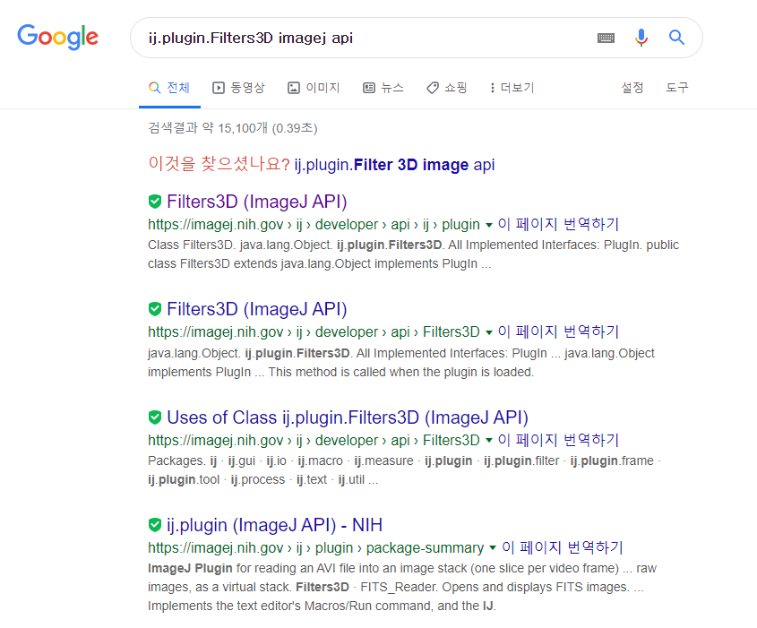
- 첫번째 검색결과를 클릭하면
Filters3D라는JAVA Class설명 화면이 나옵니다.
무작정 길게 코드를 작성하면 기능을 추가하거나 오류를 잡거나 일부를 재사용하기 어려워지기 때문에 작은 객체(
object)들의 집합으로 프로그램을 작성하는 방식을 객체 지향 프로그래밍(object oriented programming)이라고 합니다.붕어빵을 만들려면 붕어빵 틀이 있어야 하듯,
object를 만들기 위해서는 만들어질object의 속성과 기능을 미리 정의한 틀이 있어야 합니다. 이를Class라고 합니다.그리고
Class의 속성을Field, 기능을Method라고 하며, 초기화된Field를 가진object를 생성하는 method를Constructor라고 합니다.함수와 유사한
Method는 input과 output 형식을 사전에 정의하고 있기 때문에 이를 따라야 합니다. 우리가 찾은filtermethod는ImageStack형식으로 이미지를 받아들이고, 처리할Field와 파라미터를 아래와 같은 형식으로 넣게 되어 있습니다.1
static ImageStack = filter(ImageStack stackorig, int filter, float vx, float vy, float vz)
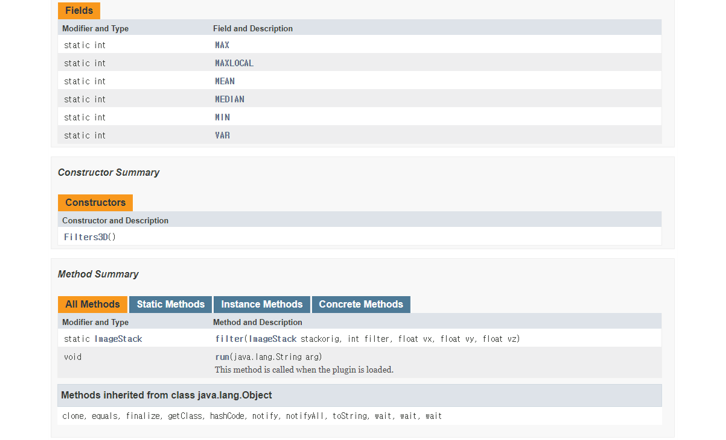
Class형식에 맞게 이미지를 다음과 같은 절차에 따라 처리합니다.입출력 형식을 위해 읽어들인 이미지를
ImageStack형식으로 변환하고 필터 적용 결과로 얻어진ImageStack형식 데이터를 다시ImagePlus로 변환합니다.1
2
3
4
5
6
7
8
9
10
11
12
13
14
15
16
17
18
19
20
21
22
23from ij import IJ
from ij import ImagePlus
from ij.plugin import Filters3D
# 1. Load Image
imp = IJ.getImage()
# 2. Image Processing
## 2.1. 이미지를 ImageStack 형식으로 변환
stack = imp.getStack()
## 2.2. Constructor: f3d라는 이름의 Filters3D object 생성
f3d = Filters3D()
## 2.3. Method: 변환된 이미지(stack)에 Field(f3d.MEDIAN) 적용.
## MEDIAN range vx, vy, vz = 5, 5, 5
filtered = f3d.filter(stack, f3d.MEDIAN, 5, 5, 5)
## 2.4. MEDIAN 적용된 이미지 형식을 ImageStack에서 ImagePlus로 변환
imp_new = ImagePlus("Filtered", filtered)
# 3. 화면에 출력
imp_new.show()- 위 코드를
clown.jpg에 적용한 결과입니다. MEDIAN필터의 범위를 넓게 잡아 선명도가 더 낮아진 모습입니다..
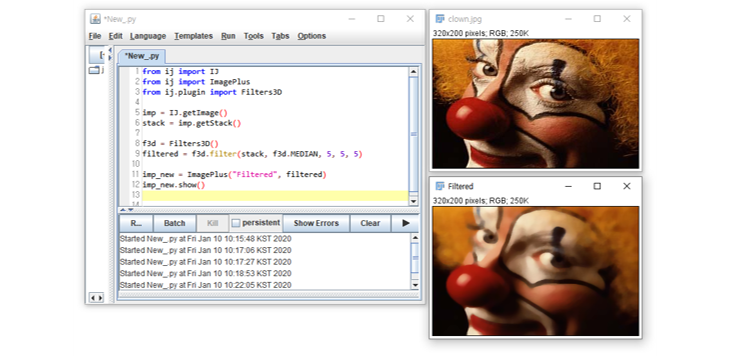
- 위 코드를
- 데이터 형식을 맞추는 등
IJ.run()에 비해 복잡한 과정이 소요됩니다. - 가급적
plugin기능을 그대로 사용하는IJ.run()사용을 권장하지만 때로는JAVA Class를 직접 호출해야만 하니 익숙하게 할 필요가 있습니다.